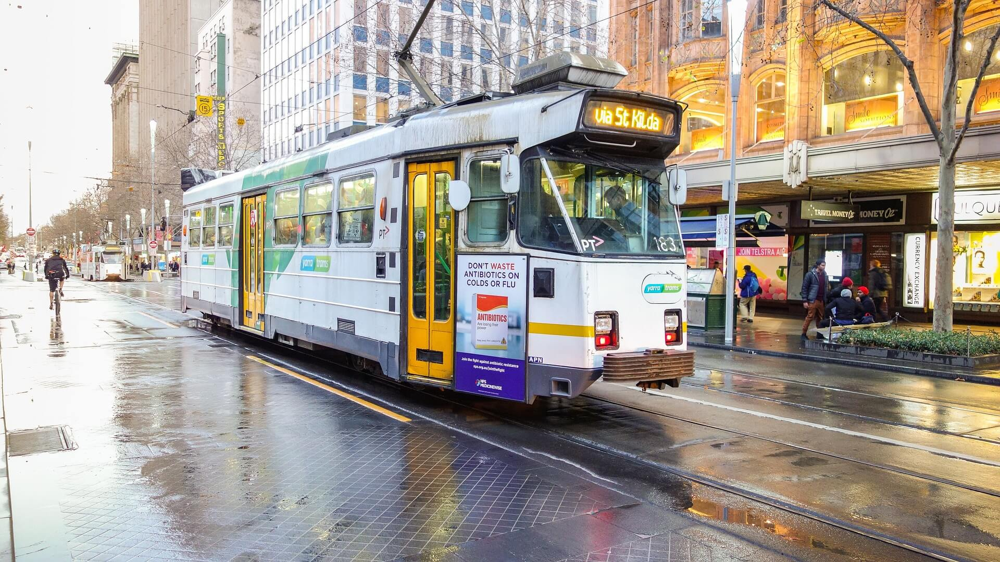
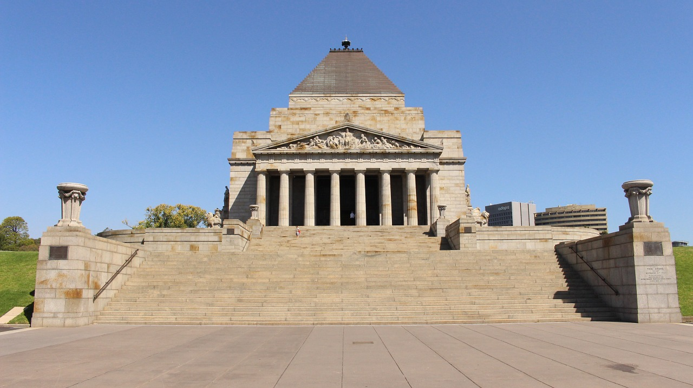

Tourism in Melbourne is a significant industry in the Australian state of Victoria. Melbourne, the country's second most-populous city, was visited by just under two million international overnight visitors and 57.7 million domestic overnight visitors during the year ending March 2014.
Melbourne's attractions include spectator sports, art, live music, festivals and fashion events that are popular with tourists. In 2008 Melbourne exceeded Sydney for the first time, in terms of money spent by domestic tourists on a per capita basis; however, at the time that the figures were released, a spokesman for the NSW Tourism Minister stated that Melbourne earned less in terms of overall tourist revenue.
Melbourne Trams

The Melbourne tramway network is a major form of public transport in Melbourne, the capital city of the state of Victoria, Australia. As of May 2014, the network consisted of 250 kilometres of track, 493 trams, 25 routes, and 1,763 tram stops.
It is the largest urban tramway network in the world, ahead of the networks in St. Petersburg (205 km) and Upper Silesia (200 km), Berlin (190 km), Moscow (181 km) and Vienna (172 km).
Trams are the second most used form of public transport in overall boardings in Melbourne after the commuter railway network, with a total of 182.7 million passenger trips in 2012/13.
Find out more about Melbourne Trams
Shrine of Remembrance

The Shrine of Remembrance, located in Kings Domain on St Kilda Road, Melbourne, Australia was built as a memorial to the men and women of Victoria who served in World War I and is now a memorial to all Australians who have served in war. It is a site of annual observances of ANZAC Day (25 April) and Remembrance Day (11 November) and is one of the largest war memorials in Australia.
Read more about The Shrine at Wikipedia